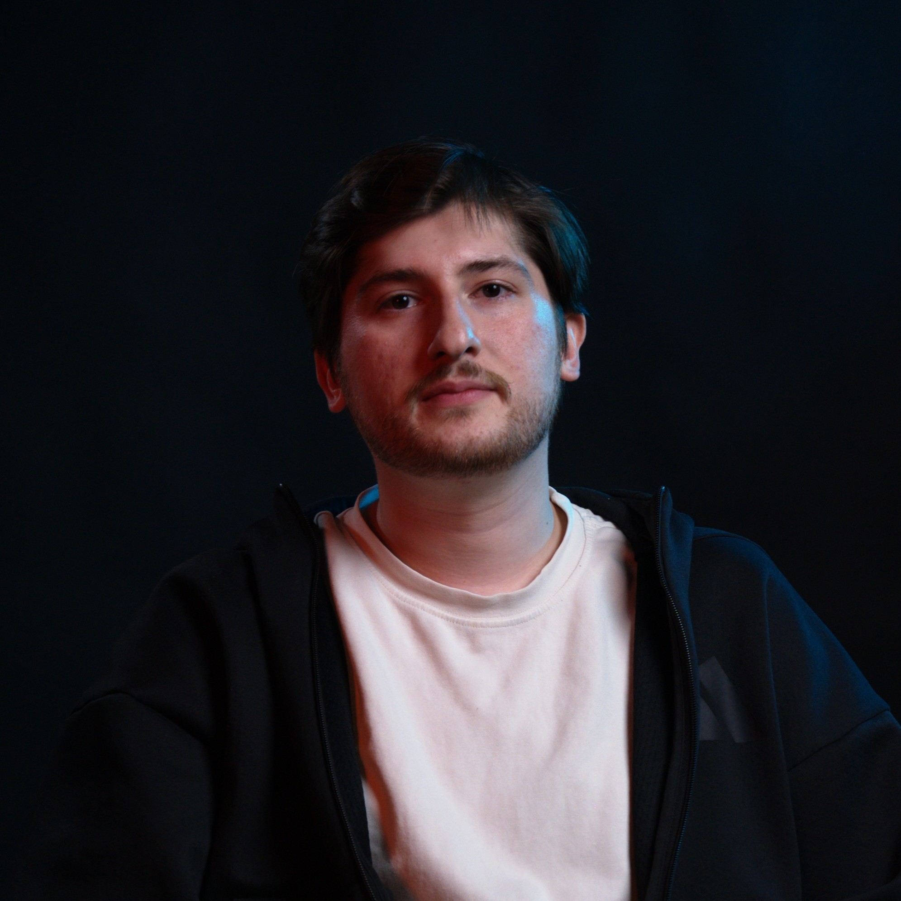
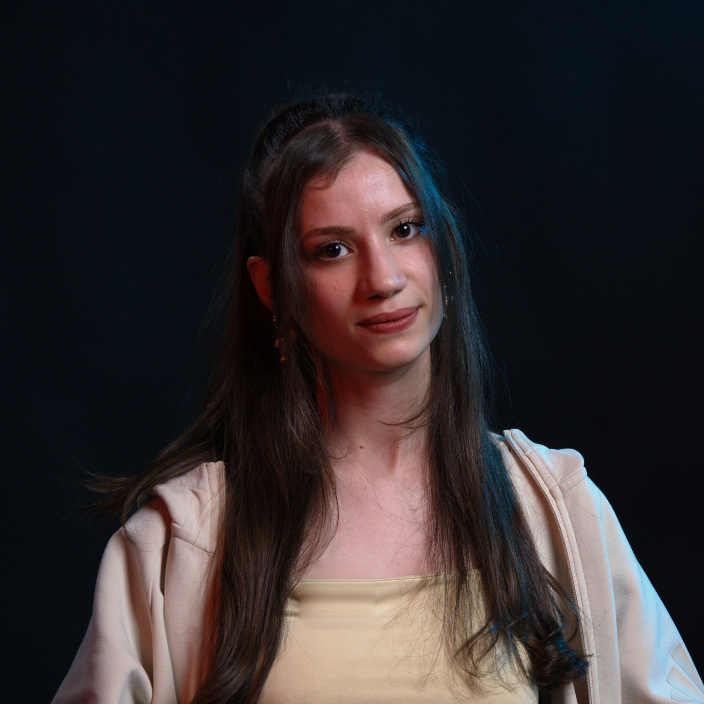
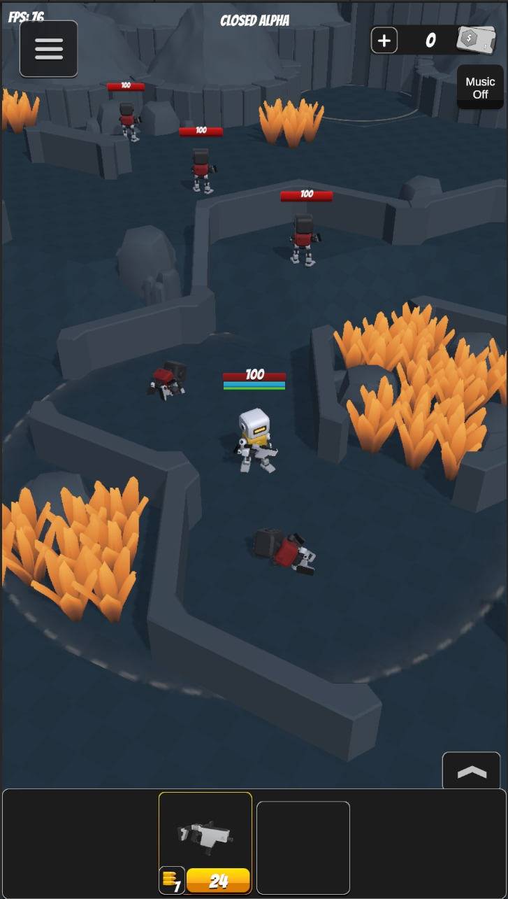
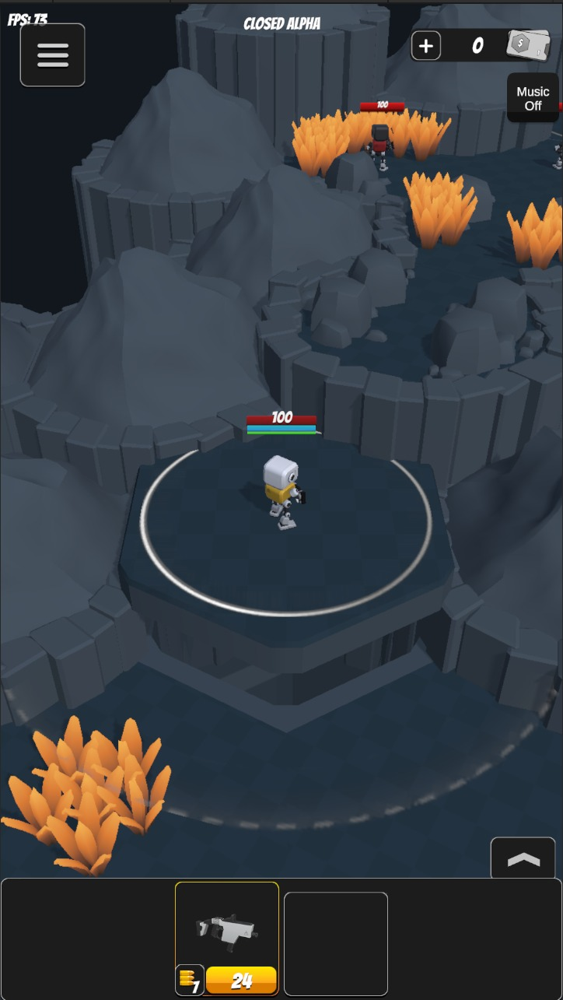
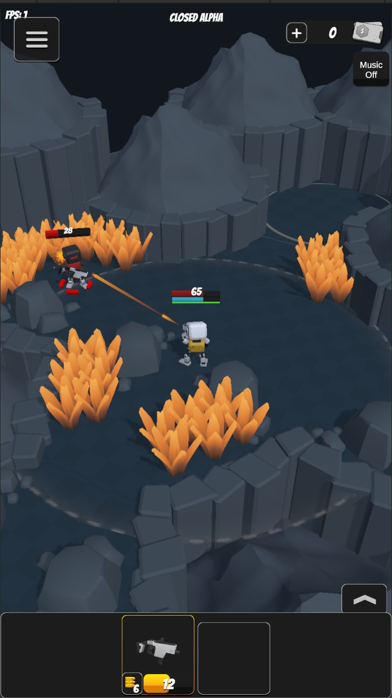
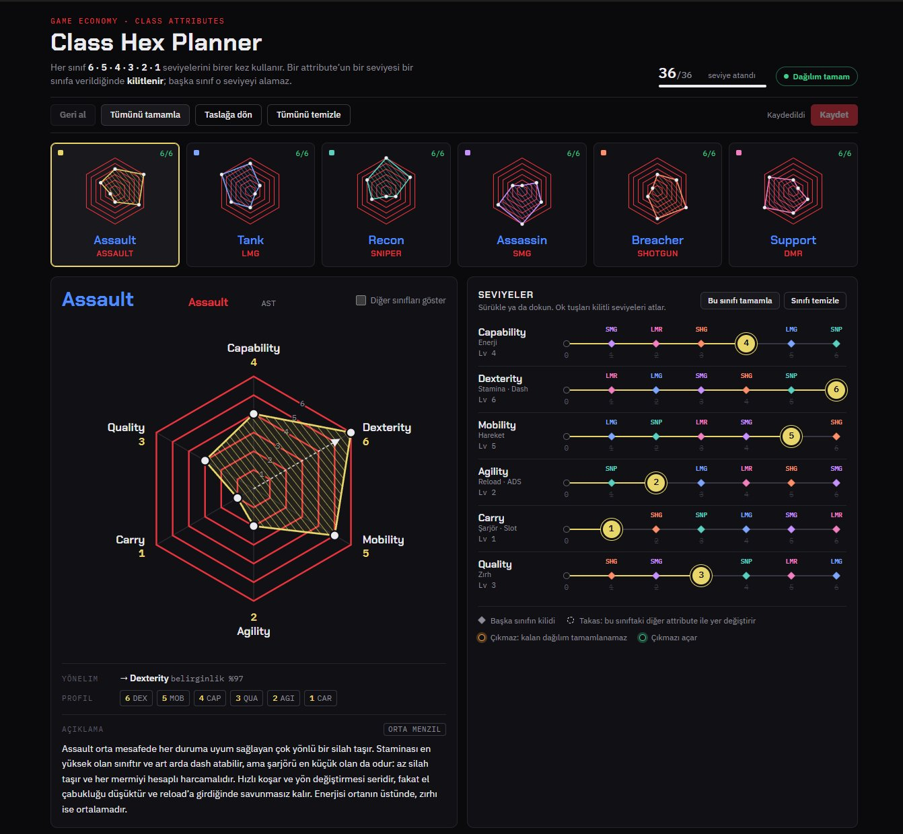
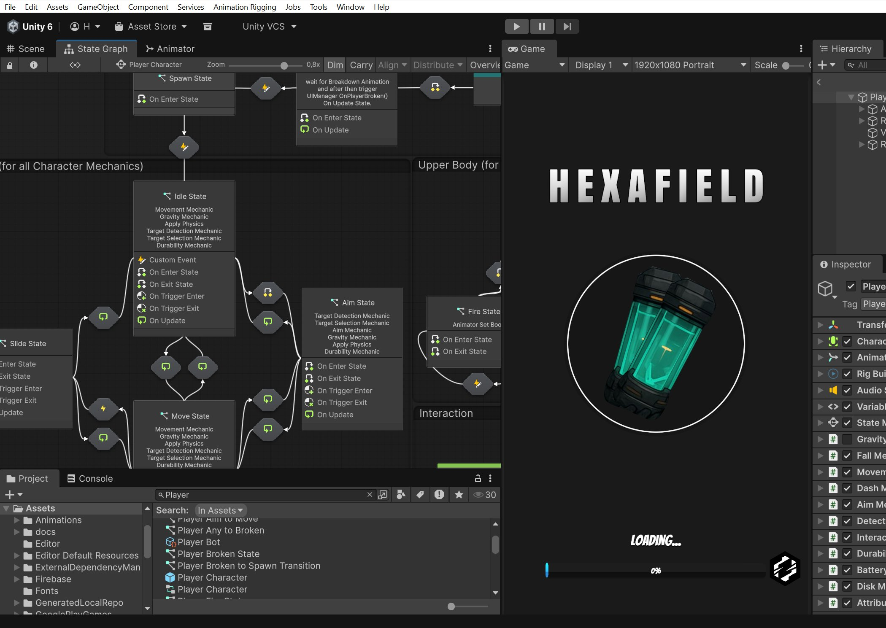
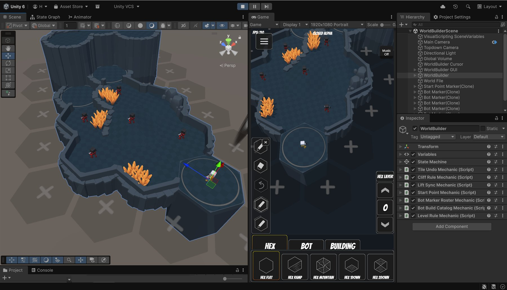

Girişim ve iletişim bilgileri


Ad, tür, hikâye ve proje kapsamı
Başvuru kılavuzundaki tür listesi: her çizgi, oyunun o türe ne kadar yaslandığını gösterir.
“Geleceğin dünyasında, gelişmiş robotlar üreten gizli bir teknoloji şirketinde savaşçı robotlar eğitiliyor. Oyuncu, bu robotlardan birini kontrol ederek zorlu simülasyonlardan ve ölümcül görevlerden geçiyor. Ancak eğitim ilerledikçe robotun gerçek amacı ve onu kontrol eden sistemin ardındaki sırlar ortaya çıkıyor. Artık mesele yalnızca savaşmak değil, kimin için savaştığını keşfetmek.”
Anahtar Kelimeler

Oyun görseli · 01
Oyun görseli · 02
Oyun görseli · 03
Oyun görseli · 04Katman tabanlı, her girişte yeniden üretilen hex-grid arena
Beş robot sınıfı; her birinin kendi attribute, stat ve silah tipi
3D, sabit açılı, yukarıdan eğik kamerada modüler robotlarla çatışma
Dayanıklılık: robotun hasar payı
Batarya: robotun enerjisi
Stamina: hareket ve efor
Şarjör: cephane
Proof of Concept


Gelir modeli ve pazara giriş
Oyunun temel hali ücretsiz; yeni bir oyun için tanınırlığı büyütür
İçerikler uygulama içi satın almayla sunulur
6–12. ayda ikinci platform olarak premium satış
Her girişte yeniden üretilen, katman tabanlı procedural hex arena; tile keşfi ve FOW; robot hareketi ve sabit eğik kamera. Ölçüt: başlangıçtan çıkış asansörüne keşfederek ulaşılıyor.
Silah mekanikleri: multishot, headshot, piercing, knockback. Düşman AI: patrol ve trace. Çimende stealth. Ölçüt: oyuncu çatışmaya girmeyi ya da gizlenip geçmeyi seçebiliyor.
Durability, Battery, Stamina ve Mag tüketimi ve yenilenmesi; lootbox ödülleri; asansörle katlar arası geçiş; görev hedefi ve çıkış. Ölçüt: gir, görevi bitir, çık döngüsü uçtan uca oynanıyor.
Silah, robot ve ortam sesleri; VFX ve vuruş geri bildirimi; temel HUD; oyun testi ve ~60 saniyelik seans dengesi. Ölçüt: core loop'u tamamlanmış, cilalı ve oynanabilir build.
1.400.000 TRY · 12 ay
Motivasyon, şartlar ve gizlilik
Geliştirme sürecimizi devlog'larla açıkça paylaşıyor; WorldBuilder ve procedural üretim üzerine edindiğimiz deneyimi diğer geliştiricilerle paylaşmaya hazırız. Her girişte yeniden üretilen arenalar ve ~60 saniyelik turlar, canlı yayın ve kısa video üreticilerine her seferinde farklı, paylaşılabilir anlar sunar.
Hızlı ve düşük maliyetli içerik üretimi: modüler robot parçaları ve WorldBuilder ile yeni içerik kısa sürede eklenir; LiveOps takvimi ve IAP içeriği sürdürülebilir şekilde beslenir. Kararlarımızı retention ve dönüşüm metrikleriyle veriyor, CPI testine hazır kreatiflerle pazar testlerine hazırlanıyoruz.
Sermaye verimliliği: iki kişilik ekip, düşük aylık maliyet ve ölçülebilir kilometre taşlarına bağlı 12 aylık plan. WorldBuilder ve modüler üretim hattı tek bir oyuna bağlı değil; stüdyonun sonraki projelerinde de yeniden kullanılabilir bir varlık.
İletişim için